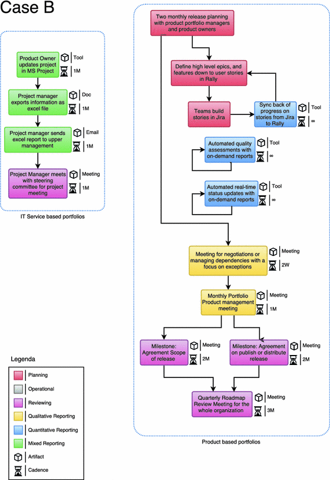
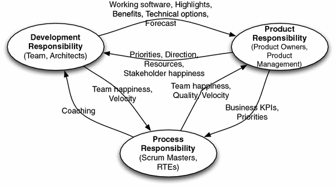

1 Introduction
In a world of ever-faster emerging societal and technological advancements, companies need to timely adjust their portfolio of products and services - to adapt to rapidly changing market demand, and to cope with an increasingly entrepreneurial competition [1]. Agile Portfolio Management (APM), as a potential solution, defines the heartbeat in connecting strategy to operations through the selection, prioritisation and review of initiatives an organisation executes. Still, for large organisations with strong product and service development capabilities with 50 to 500 teams, managing and keeping a meaningful overview of their ventures is a challenging task.
Agile portfolio management is associated with the capability for a swift change of priorities across initiatives based on the faster delivery of intermediate outcomes and a better collaboration in and across teams [1]. Comparing to traditional project management approaches, agile methods put a focus on understanding the value created in context and rely heavily on direct communication and frequent reviews of intermediate results with users. It follows the ethos of the Agile Manifesto ‘Working software is the primary measure of progress.’ [2].
To provide the right amount of oversight and select the right reporting approach is crucial for a successful and ‘agile’ connection of strategy to operations, especially due to the focus on the value delivered. Authors like Müller et al. [3] point out how project and programme reporting influences the performance of portfolio management. Yet, current literature pays little attention to creating and managing oversight in portfolios in such dynamic environments [4]. Furthermore, while the origins of portfolio management lie in managing portfolios of financial assets, project selection and reporting often still follows predominantly ad hoc or financial metrics [5], or considers projects in isolation [4]. How to maintain a meaningful oversight effectively when the knowledge expands towards the boundaries of a dozen teams remains a question.
In this paper we present the findings of our study on reporting approaches, artefacts and metrics in large organisations applying agile methods within their portfolios. The remainder of the paper is organised as follows: First, we discuss the gap in existing literature and formulate our question. Second, we describe our approach and descriptive results. Then, we reflect on our findings in light of existing literature.
2 Related Work
In the following subsections, we will provide an overview of the existing literature on Portfolio Management (PPM) and Agile Portfolio Management (APM) along with the reporting of portfolio management, and include an evaluation of the current gap in the literature.
2.1 Connecting Organisational Strategy to IT Development Initiatives Through Agile Portfolio Management
Portfolio management deals with the question which initiatives an organisation should pursue and how to connect those to strategic goals. Cooper et al. [5] define the goals of portfolio management as follows: (1) to maximise return on R&D and technology; (2) To maintain the business’s competitive position; (3) to properly allocate scarce resources; (4) to forge the link between project selection and business strategy; (5) to achieve a stronger focus; (6) To yield the right balance of projects and investments; (7) to communicate project priorities both vertically and horizontally within the organisation; (8) to provide greater objectivity in project selection.
Agile Portfolio Management differs from traditional Project Portfolio management as it succeeds agile software development frameworks, while traditional Project Portfolio Management (PPM) is based on principles to manage financial portfolios. Agile methods such as Scrum challenge portfolio and programme reporting in existing, especially large, organisations due to a faster and more frequent delivery of intermediate results, different roles, and a different mindset [1]. The increased delivery of intermediate results requires faster feedback loops in domains outside individual projects, such as portfolio management [1, 6]. This challenges the traditional view on project portfolio management which, once selected, focuses on managing projects in isolation [4].
In a first cross-case study comparing the application of agile portfolio management in 14 large organisations to existing literature and professional frameworks, Stettina and Hörz [1] point at the characteristics of agile portfolio management as (1) transparency of resources and work items, improving trust, decision-making, and resource allocation; (2) collaboration, close collaboration based on routinised interaction and artefacts enabling frequent feedback-loops across the domains; (3) commitment to strategically managed portfolios; (4) team orientation, removing unrest in resource allocation and building capabilities in teams.
While there is an extensive body of knowledge on Project Portfolio Management, existing literature pays little attention to portfolios of initiatives in agile and dynamic environments [4]. The origins of PPM in financial models can be still traced to a dominance of financial metrics and indices in portfolio decision-making [7]. Cooper et al. [5] found that the use of financial models alone yields poorer portfolio results. They advise the application of strategic methods and scoring approaches compared to financial and quantitative indicators only. Cooper et al. [8] describe two main approaches to project portfolio review in new product development: a (1) ‘gates dominate’, and a (2) ‘portfolio dominates’ approach. In a ‘gate-dominated’ project portfolio management approach, senior management will evaluate individual projects within a portfolio and will make Go/Kill decisions at these gates. In a portfolio review dominated approach, the projects within a portfolio are competing with each other.
2.2 Maintaining a Meaningful and Effective Oversight Practice Across Initiatives Pursued Throughout a Portfolio of Agile Teams
Reporting is considered to be one of the main process areas in portfolio management and is positively associated with portfolio success [3].
Empirical literature on reporting in agile portfolio management is scarce. Existing contributions discuss reporting as providing visibility across projects [9]. Oversight [10] and metrics [11] are frequently mentioned as two of the domains affected by implementing agile portfolio management. Characteristics associated with the practice include transparency of resources and work items and close collaboration based on routinised interaction and artefacts enabling frequent feedback-loops [1, 6]
Metrics are generally considered to be an integral part of reporting, contributing to the success of the entire portfolio. Vähäniitty [6] points out that performance metrics and incentives should not encourage local optimisation within a portfolio. In practitioner literature, Leffingwell [12] and Krebs [13] provide practical recommendations for different metric types. In his book, Krebs [13] describes three types of metrics as (1) progress, (2) team morale, and (3) quality (compare [13] p. 67). Leffingwell [12] describes (1) employee engagement, (2) customer satisfaction, (3) productivity, (4) agility, (5) time to market, (6) quality, (7) partner health (compare [12] p. 308). While existing literature points at possible metrics and artefacts to embed those, empirical evidence is lacking.
Project Management Offices (PMO), or Project Portfolio Management Offices (PPMO), traditionally serve as a supporting function, providing oversight across the pursued initiatives across the portfolio, e.g. by collecting project information and updates from respective teams and preparing it for management. Tengshe and Noble [11] describe the changing role of a PMO when adopting agile methods, by providing means of continuous improvement, training and coaching across projects and portfolios. Rautiainen et al. [9] describe their case of setting up a portfolio of agile teams with the help of a PMO to provide transparency, helping to reduce duplicate projects and aligning projects to strategy.
More recently, software tooling is proposed to support automated reports across agile teams in programmes and portfolios [6]. However, an empirical perspective beyond individual cases on what reporting practices are applied in practice and the interaction of practices with reporting artefacts and metrics is missing.
2.3 Taking the Perspective of Knowledge Boundaries to Understand Effective Reporting in Agile Portfolio Management
Reporting practices can be, analogously to documentation, considered as a knowledge conversion practice [14]. While there is little academic literature on reporting in agile portfolio management, there is a growing number of contributions on documentation and knowledge transfer across agile teams (compare [15, 16]).
Project reporting and reviewing relies on knowledge transfer across different teams and different functions such as finance, product development or portfolio management. To convey knowledge across different domains or boundaries, agile methods rely heavily on frequent feedback loops based on direct face-to-face communication, but they also require the right artefacts in context to support a sustainable and effective knowledge transfer [15]. Similar to project handovers [16] or documentation practices [15], reporting relies on man-made artefacts such as marketing reports, financial status, portfolio updates, or retrospective reports. Such artefacts crossing different boundaries of knowledge, such as portfolio management, product management or software development, are considered ‘boundary objects’ [17].
Knowledge boundaries are both “a source of and a barrier to innovation” [18]. Innovation often happens on the boundaries of knowledge as stated by Leonard [19]. In order to create new products and service, agile teams need to effectively cross knowledge boundaries. Agile methods such as Scrum are based on cross-functional teams, which effectively cross knowledge boundaries through direct, face-to-face communication. However, when embedding agile teams in a wider organisational context, such as a portfolio management process, such teams effectively create new knowledge boundaries which need to be bridged effectively.
Carlile [18] describes knowledge boundaries in new product development, such as in Agile Software Development, and three distinct approaches move knowledge across boundaries: (1) the syntactic; (2) the semantic; and (3) the pragmatic approaches.
The syntactic approach deals with establishing a shared and stable syntax to enable accurate communication between sender and receiver [18]. Once a syntax is established, crossing the boundary becomes a knowledge transfer problem. Examples for boundary objects crossing the syntactic boundary are repositories storing the information using a previously agreed syntax. In the context of portfolio management, such repositories might be tools documenting a team’s development progress, or the status of schedules and budgets collected over time.
The semantic approach acknowledges that despite a shared language or syntax, different interpretations can occur. Different worlds of thought and areas of interest exist across different functions and teams within an organisation. For example, a software development team is interested in a high-quality and bug-free software, while product and portfolio managers are interested in a product that is commercially viable. Examples of boundary objects to cross a semantic boundary are standardised forms and methods. Using a User Story template, for example, allows to translate and store user requirements in a template understandable to business. Especially, when compared to traditional requirements documentation which often use a very technical language.
At the pragmatic knowledge boundary the parties involved need to be willing to understand, negotiate and alternate their knowledge [17]. Product and portfolio management, for example, needs to be willing to alternate their plans based on new technical possibilities given by the development team. Teams need to be willing to (re)align their work to new strategic priorities for new and existing product lines, or communicate and negotiate work based on discovered interdependencies with other teams. Example of a pragmatic boundary object is a Program Board used in SAFe [12].
The interaction of reporting practices, the involved artefacts crossing boundaries of knowledge, and the concrete metrics applied, can thus be considered important when studying reporting in agile portfolio management.
2.4 Gap in the Literature and Research Question
Following the state of art reviewed in the previous subsection, we would now like to reflect on the gap in the literature and the resulting objectives for this study.
To summarise, the existing literature points out that: Firstly, project portfolio management is associated with overall success on R&D organisations [8], and reporting is positively associated with portfolio success [3]. Secondly, findings from organisations employing agile practices imply that higher frequency of interaction, thus also reporting, is required in agile portfolio management [1]. And thirdly, the interplay of routines and artefacts is important for a good and sustainable agile practice [15].
In light of the existing literature we would like to pose the following research question to guide our study: What are reporting routines, metrics and artefacts applied in Agile Portfolio Management?
3 Method
Considering the limitations of the available literature, it was felt that an explorative study would best be suited to this new topic. As is common in the study of management practices in real-world contexts, we chose the design of our case-study research the model proposed by Yin [20]. The data collection for the case studies was carried out by conducting semi-structured interviews with professionals working in large organisations that have agile portfolio management or are in the process of moving towards an agile portfolio management process. We chose a multiple case-study protocol with the aim of drawing more robust and generic findings which would have an impact on building a theory [20]. In the following subsection we will elaborate our case study protocol.
Case Selection. Interviews for this study were conducted with professionals working in organisations that complied with our case selection criteria and which were part of the portfolio management process. In order to find suitable organisations matching our criteria we used our own network, referrals and online reports. After identifying suitable organisations, we used own network, referrals as well as LinkedIn Premium to identify the candidates. The following case selection criteria were applied: (1) The organisation has at least 250 full-time employees (FTE). (2) The organisation uses agile methods with stable Scrum or Kanban teams (3) The organisation has a portfolio/programme management process with at least one portfolio. (4) The organisation has a portfolio reporting process. (5) The organisation has at least three teams working with agile methods. (6) The interviewee is directly involved in the portfolio management process of the organisation.
Data Collection: Semi-structured Active Interviews. The interviews took place between July 2016 and December 2016, each taking between 40 and 80 min. Most interviews were conducted face-to-face at the organisation. The interview guide consisted of the following main sections: (1) General Information regarding interviewee and organisation; (2) Project Management, Portfolio Management, Agile Portfolio Management; (3) Project Portfolio Management Office; and (4) Reporting. Example questions were: What are some of the common methods that you use within your organisation on portfolio level? What does your reporting process look like at initiative/project level? How does your reporting process look like at portfolio level? Could you write down a step-by-step guide to your reporting process? On a scale of 1 to 5, how satisfied are you with your portfolio reporting process? Which reporting activities and artefacts do you consider to be agile? Do you have a PMO? What are the functions of your PMO?
Data Analysis. All interviews were digitally recorded and transcribed with the consent of the interviewees. The analysis started by creating a case description of each organisation and an overview of all case characteristics. After creating case summaries we tabulated the data on artefacts and metrics to allow for cross-case comparison. The data from the process-related questions on project and initiative level was organised into narrative fragments and translated into process diagrams. The analysis of the data took place in close discussions with the two authors in the period between February and October 2017.
4 Results
For this study, a total of 14 people were interviewed from different organisations across multiple sectors, sizes and countries. This chapter provides an overview of all gathered data and any additional observations that were made.
Overview Cases. An overview of case organisations is presented in Table 1. The majority of our cases were large organisations with thousands of employees and a large IT portfolio, predominantly in the private sector. A large majority use a monthly reporting practice, based on Gates-driven reporting.
All case organisations reported applying Scrum as their main delivery method, partially supported by Kanban and Lean practices. Case organisations use different agile at large models connecting Scrum in the organisational setting. Two out of the 10 case organisations, case B, and E, mentioned that they used SAFe as the starting point for defining their agile portfolio management process. There were several participants who also mentioned SAFe as a framework that they would use in the future. Half of the case organisations in this study mentioned that they to some extent use PRINCE2. Case organisation B is somewhat of an exception when it comes to applying PRINCE2. The reason for this is that two people were interviewed from two different parts of the organisation.
We applied the agile transformation maturity model, with the stages Beginner, Novice, Fluent, Advanced and World-class, as proposed by Laanti [21] to determine portfolio maturity.
Table 1.
Case organisations and descriptive variables. (Scale for satisfaction with reporting process: 1 = Not at all satisfied, 2 = Slightly satisfied, 3 = Moderately satisfied, 4 = Very satisfied, 5 = Extremely satisfied)
# | Industry | Size (FTE) | PPM type | Review frequency | Actors | PPM maturity | Satisf. PPM reporting | Method |
|---|---|---|---|---|---|---|---|---|
A | Telco | 350 | Gates | Bi-weekly | Management Team | Beginner | 3/1 | Scrum and SoS |
B | Electronics | 4500 | PPM | Quarterly | PPM | Fluent | 4/3 | Scrum & SAFe |
C | Telco | 26000 | Gates | Monthly | Board of Directors | Beginner | 3 | Scrum & MoP |
D | Finance | 650 | Gates | Monthly | Steerco | Beginner | 2 | Scrum |
E | Government | 30000 | PPM | Bi-weekly | Portfolio Board | Fluent | 4 | Scrum & SAFe |
F | Aviation | 2000 | Gates | Monthly | CIO | Beginner | 4 | Scrum & Custom |
G | IT Service | 13000 | Gates | Tri-weekly | Steerco | Beginner | 2/4 | Scrum & Spotify |
H | Public Transport | 30000 | Gates | Bi-weekly | Portfolio Board | Beginner | 1 | Kanban & MoP |
I | Logistics | 11000 | Gates | Monthly | Steerco/CIO | Beginner | 1/4 | Scrum & PMI |
J | E-commerce | 1100 | PPM | Trimesterly | Management Team | Fluent | 4 | Scrum & Spotify |
Reporting Practices. After creating process diagrams for each case organisations (see Fig. 1) we identified three distinct reporting approaches linked to the size and agile maturity of an organisation. Across our cases we found (1) Cadence-driven, (2) Tool-driven, and (3) PMO-driven reporting approaches.
Organisations with a Cadence-driven reporting approach employ reporting activities that revolve around their development cadence and method, such as the bi-weekly Sprints in Scrum, or the Program Increments (PI) in SAFe [12]. In our cases, we found this mostly be Scrum, which in practice means a two-weekly reporting cadence based on a two-weekly Scrum sprint, and the 4 + 1 two-sprint cadence in SAFe.
Organisations with a PMO-driven reporting approach employ reporting activities that revolve around templates provided by project management frameworks like PRINCE2. In most case organisations this meant the manual creation of reports in the form of documents or spreadsheets. Cloud-based office suites like Microsoft OneDrive or Google Drive, or network drives are often used to store and share such reporting artefacts.
Organisations with a Tool-driven reporting approach employ reporting activities that are mostly high-level or on an ad hoc basis. In our case organisations, we found that day-to-day reporting activities are mostly automated with Tools like JIRA or CA Agile Central.

Fig. 1.
Reporting practice in case organisation B
Artefacts. In the cross-case results we identified three types of reporting artefacts in practice1 as follows:
- 1.Tool-based artefacts. Are reporting artefacts that live within a tool. Examples identified among the case organisations include collaboration software, automated test reports or dashboards. Examples are the tool based Portfolio board reports in org. E.
- 2.Document-based artefacts. Reporting artefacts in the form of documents. Examples identified among the case organisations include excel spreadsheets, text-files, PowerPoint sheets. An example is the project sheet maintained by org. H.
- 3.Interaction-based artefacts. Report artefacts that are not created but are rather an intangible by-product of the reporting interaction. Examples identified among the case organisations include insights shared during a meeting or an informal ad hoc update using chat.
Table 2.
Example artefacts, with metrics, reporting routine type and knowledge boundaries crossed ( = syntactic; = semantic;  = pragmatic)
= pragmatic)
= pragmatic)Level | Org. | Artefact | Metric(s) | KB | Type |
|---|---|---|---|---|---|
Portfolio | E | Portfolio board report | Velocity Dependencies Results past period Results coming period | 
| Tool |
G | Portfolio wall (physical) | Dependencies | Cadence | ||
.. | .. | .. | .. | .. | .. |
Product | A | PO highlight report | Epic status Results past period Results coming period | 
| Cadence |
I | Project report | Milestones Progress Financial data | 
| PMO | |
.. | .. | .. | .. | .. | .. |
Team | G | Retrospective report | Forecast Velocity Work capacity % impediments Team happiness | 
| Cadence |
.. | .. | .. | .. | .. | .. |
When we consider the reporting artefacts, the reporting process diagrams and the agile maturity we can see that organisation with a higher agile maturity tend to limit the amount of document-based reporting. When we compare the used artefacts with the fragments of narrative provided by the employees in our case study regarding their benefits and challenges, we can see that reporting artefacts work best when they are well thought out, are used and add value.
Metrics. From our cross-case analysis based on the metrics in Table 2 we identified 5 metric types:
- 1.Performance metrics measure the efficiency of the work (e.g. velocity and cycle time trends in org. B)
- 2.Quality metrics, measure the quality of the work (e.g. exceptions in org. B & D)
- 3.Progress metrics measure how far along you are with the work (e.g. velocity planned and realised in org. A)
- 4.Status metrics measure the current state of work (e.g. budget, resources)
- 5.Contextual metrics provide measurements and information on the work (e.g. project highlights in orgs. C, D and F, context descriptions)

Fig. 2.
Domains of reporting responsibility in Agile Portfolio Management
5 Analysis and Discussion
Based on our data from the case organisations we will now discuss our findings in light of the existing literature.
5.1 Three Domains of Knowledge Responsibility: Product, Development and Process
Across our case organisations we identified three main domains of knowledge practice involved: (1) Product and portfolio responsibility, (2) Development, and (3) Process. We have depicted the three domains and their reporting relations in Fig. 2. As a product manager in Org. A. elaborated: “..So it is mainly the demos, the happiness of the team members and the happiness of the stakeholders..”.
This reporting configuration fundamentally differs from other project management frameworks like PRINCE2, as the role of the traditional project manager is split up into a content, process and team responsibility in the roles of the Product Owner and Scrum Master. In the majority of our case organisations, the team directly and frequently ‘reports’ to the business, demoing working software and other intermediate results at the end of each development cycle, rather than relying on ad hoc presentations, escalation meetings and intermediaries (e.g. PMO). For example as hinted by the Vice President of a product unit at Org. B.: “..we had them [PMOs] but we got rid of them. We wanted the people in the teams to feel linked and part of the project. So we did not want the people to feel like they were a generic team, they had to feel product ownership. So we distributed the PMOs in the product teams. So every product team has a release management team, we work according to SAFe.”
Product and portfolio managers are concerned about how well the complete product performs from a business perspective, when they can expect a product to be released, and what technical options for future development there are. Product and Portfolio management needs to provide strategic vision, guidance, product priorities and resources to the team.
Development teams and software architects are concerned about the quality of the software they produce, dependencies with other teams, and the directions for a product line. Development teams are providing product demos and technical options.
Scrum masters and Release Train Engineers are concerned about the quality of the process, teamwork and the happiness of the teams involved in order to produce a good product or service. Those responsible for the process, such as Scrum Masters and release teams, guide the teams to allow for effective work and remove impediments.
5.2 Three Types of Reporting Routines: Cadence-, Tool-, and PMO-Driven
Within our case organisations, we found three reporting approaches: a PMO-driven reporting approach, a Cadence-driven reporting approach and a Tool-driven reporting approach.
Based on the cross-case results, we found that the identified reporting approaches correlated with the agile maturity of the organisations and its size. Organisations with a lower agile portfolio management maturity and a gates-dominated portfolio management approach tend to apply a PMO-driven reporting approach. Organisations using a gates-dominated portfolio management with a higher agile maturity tended to use a Cadence-driven reporting approach.
Comparing the portfolio management approach used by the organisation with the reporting approach shows us that there is a connection between the two. We found that organisations using a portfolio review-dominated portfolio management approach will tend to use a Tool-driven reporting approach. organisations using a gates-dominated portfolio management approach will tend to use a Cadence-driven or a PMO-driven reporting approach. We therefore propose that both the portfolio management approach and the reporting approach is taken into account when making recommendations for achieving effective reporting (Table 3).
Table 3.
Identified portfolio reporting approaches and their characteristics
PMO-driven | Cadence-driven | Tool-driven | |
|---|---|---|---|
Org. Size | Large | Medium to large | Large |
Driving element | PMO | Cadence | Tooling |
Predominant PPM approach | Phase-gates | Portfolio review | Portfolio review |
Metrics | Qualitative & quantitative | Predominantly qualitative | Predominantly quantitative |
Agile maturity | Low | Low to medium | Medium to high |
5.3 Using Characteristics of Boundary Objects to Understand Requirements for Effective Reporting in Agile Portfolio Management
In the following subsections we will apply the notion of boundary objects to understand the requirements for effective reporting encountered in our case organisations. We will first elaborate on quantitative metrics and qualitative information used for reporting across our cases. Then, we will discuss manual and automated reporting routines. Lastly, we will elaborate why specific artefacts and metrics, as boundary objects, are better suited for specific parts of the reporting process.
Qualitative vs Quantitative Reporting. One of the biggest differentiators for effective reporting we have found in our case organisations was a clear presence of both qualitative reporting as well as quantitative reporting. We found that qualitative reporting allows organisations to explore opportunities, share knowledge, provide context and provide strategic insights. We found that quantitative reporting allows organisations to quantify initiatives and their progress, verify goals, validate the value and provide quick tactical insights. In Table 4 we provide an overview of qualitative and quantitative reporting.
Qualitative and quantitative reporting in the case organisations with a relative high agile portfolio management maturity (see B, E and J) had defined and measurable goals. Within these case organisations, virtually all initiatives are expected to be quantifiable. Qualitative reporting in these organisations, on the other hand, is more loosely defined and is more often used at a higher level, or done on an ad hoc basis. Qualitative and quantitative reporting in case organisations with a medium to low agile portfolio management maturity (A and I) had fewer measurable goals. We found that case organisations with the Tool-driven reporting approach tend to have reporting processes in place that made a clear distinction between qualitative reporting and quantitative reporting. In organisations with a PMO- or Cadence-driven reporting approach, this distinction was less evident.
Manual vs Automated Reporting. Regardless of the scale of the organisation, manual reporting plays an important role in reporting due to the qualitative, contextual knowledge and information. While qualitative reporting information might be automated with approaches like machine learning in the future, our case organisations all employed a manual reporting process for qualitative information. From analysing the interviews, process diagrams and the literature, we found that the positive impact of automatic reporting on the effectiveness increases by contributing to more consistent and valid reporting, and more up-to-date reporting. Participant B1 stated the following when asked about what worked well in the reporting process of his organisation: “Anything that is automatically produced. What doesn’t work well is when the team needs to spend hours at night making reports using Excel and PowerPoint and all that nonsense. It’s very sensitive to creative manipulation and is always out of date.”
Table 4.
Qualitative and quantitative reporting in our case organisations, respective types of knowledge boundaries, and examples of effective boundary objects
Quantitative | Qualitative | ||
|---|---|---|---|
Syntactic (effective transfer) | Semantic (effect. translation) | Pragmatic (effect. negotiation) | |
Product & portfolio responsibility | Business metrics Stakeholder happiness | User Stories Epic status Milestones | Portfolio wall Strategic benefits |
Development responsibility | Velocity Test results Sprint Burndown | Highlights | Working software Dependencies map |
Process responsibility | Team happiness % Impediments | Team radar* | Retrospectives Work agreement* |
Effective Boundary Objects for Qualitative and Quantitative Reporting in Agile Portfolio Management. We will now elaborate on the boundary objects identified across the three domains of Product, Development and team responsibility, and how they relate to the identified reporting approaches as depicted in Table 4.
We will use Carlile’s [18] three types of knowledge boundaries to understand the boundary objects. Following Carlile, at a syntactic boundary, an effective boundary object “establishes a shared syntax or language for individuals to represent their knowledge”. At a semantic boundary, an effective boundary object “provides a concrete means for individuals to specify and learn about their differences and dependencies across a given boundary”. At a pragmatic boundary, an effective boundary object “facilitates a process where individuals can jointly transform their knowledge” [18].
Quantitative reporting is mainly associated with the syntactic boundary across our cases. Most metrics are traditional metrics such as time, budget and scope, but also more recent metrics like Velocity. In our case organisations, especially the more mature ones like B, E and J, such quantitative metrics are automated in software tools. According to Carlile [18], the syntactic boundaries resemble a knowledge transfer problem which requires a shared and sufficient syntax across the boundaries, e.g. team members and Product Owners agree on Velocity and how it is measured as a quantifiable measure of the rate at which Scrum teams consistently deliver software. Once a shared syntax has been established, repositories such as the project management tools applied by our participants (e.g. CA Agile Central/Rally or JIRA) are an effective boundary object.
Qualitative reporting is predominantly associated with semantic and pragmatic boundaries [18]. It depends if qualitative information is used by participants to translate their knowledge across boundaries, or if the boundary objects need to support a process of negotiation and transformation of knowledge - thus, if a semantic or a pragmatic boundary needs to be crossed. User Stories, for example, are effective boundary objects for analysis and communication of requirements as the template allows for the translation and understanding of requirements across different functions (e.g. system users, developers, UI designers). User Stories alone are not an effective boundary object for reporting the progress of a project. A working software artefact is an effective boundary object to support the software development process as it allows the team to communicate progress, to collect feedback of users, and negotiate next priorities e.g. with Product Owners.
According to Carlile [17], crossing a pragmatic knowledge boundary is only possible when embedded in a feedback loop, a dialogue allowing for negotiation. Crossing the pragmatic boundary requires boundary objects such a demos embedded in sprint reviews, or other forms of synchronous face-to-face communication. Cadence-driven reporting such as the one present in organisations A, E or G allows for such.
Limitations. While we employed a rigorous method and payed attention in selecting our case organisations, there are limitations to our study. The main limitation lies in the limited amount of cases. The second limitation lies in the beginning maturity of our cases.
6 Conclusions
In this paper we present the preliminary findings of our study on reporting in agile portfolio management. Based on 14 interviews in 10 organisations applying agile methods in their portfolios of IT initiatives, we present a perspective on the practice in use for the first time.
There are four main contributions discussed in this article: (1) we identify three domains of knowledge and responsibility in agile portfolio management, (2) we identify three types of reporting routines, (3) we use the concept of ‘boundary objects’ to understand requirements for effective reporting across the identified domains, and lastly (4) we provide examples of effective boundary objects identified across our cases.
Across our case organisations we observed three distinct types of reporting routines: Cadence-, Tool- and PMO-driven reporting. With those approaches we observe two trends: The use of software tooling to automate reporting of quantitative metrics across agile teams, and socialisation of knowledge through frequent face-to-face review meetings in teams and at the portfolio level. As an organisation grows the automation of reporting plays an increasingly important role in achieving effectiveness. We found that large-scale organisations that have automation within their reporting process were able to transfer quantitative reporting information with more consistency, validity and efficiency. Regardless of the size of the organisation, qualitative reporting and reviews remain a key part of understanding the full portfolio context. To maintain effectiveness the primary focus of qualitative reports was to translate, to transform knowledge, and to make automated reporting actionable. Our findings suggest that organisations that strongly embed both qualitative and quantitative reporting felt that their reporting helped increase their performance, and were more satisfied with their reporting process.
We may conclude that reporting in agile portfolio management is characterized by a balance of qualitative reviews and quantitative metrics to enable a transparent connection of strategy to operations in context. Agile methods have an impact on the portfolio management process as they focus on the value under development and by doing it with a much higher frequency. The notion of knowledge boundaries and boundary objects can help to understand communication requirements and shape effective reporting routines to allow for such a higher degree of interaction.
Acknowledgment
We thank all interview participants for generously contributing to this study.

Open Access This chapter is licensed under the terms of the Creative Commons Attribution 4.0 International License (http://creativecommons.org/licenses/by/4.0/), which permits use, sharing, adaptation, distribution and reproduction in any medium or format, as long as you give appropriate credit to the original author(s) and the source, provide a link to the Creative Commons license and indicate if changes were made.
The images or other third party material in this book are included in the book's Creative Commons license, unless indicated otherwise in a credit line to the material. If material is not included in the book's Creative Commons license and your intended use is not permitted by statutory regulation or exceeds the permitted use, you will need to obtain permission directly from the copyright holder.
References
1.
Stettina, C.J., Hörz, J.: Agile portfolio management: an empirical perspective on the practice in use. Int. J. Proj. Manag. 33(1), 140–152 (2015)Crossref
2.
Williams, L.: What agile teams think of agile principles. Commun. ACM 55(4), 71–76 (2012)Crossref
3.
Müller, R., Martinsuo, M., Blomquist, T.: Project portfolio control and portfolio management performance in different contexts. Proj. Manag. J. 39(3), 28–42 (2008)Crossref
4.
Petit, Y.: Project portfolios in dynamic environments: organizing for uncertainty. Int. J. Proj. Manag. 30(5), 539–553 (2012)Crossref
5.
Cooper, R.G., Edgett, S.J., Kleinschmidt, E.J.: New product portfolio management: practices and performance. J. Prod. Innov. Manag. 16(4), 333–351 (1999)Crossref
6.
Vähäniitty, J., et al.: Towards agile product and portfolio management (2012)
7.
Jeffery, M., Leliveld, I.: Best practices in it portfolio management. MIT Sloan Manag. Rev. 45(3), 41 (2004)
8.
Cooper, R.G., Edgett, S.J., Kleinschmidt, E.J.: New problems, new solutions: making portfolio management more effective. Res. Technol. Manag. 43(2), 18–33 (2000)Crossref
9.
Rautiainen, K., von Schantz, J., Vahaniitty, J.: Supporting scaling agile with portfolio management: case paf. com. In: 2011 44th Hawaii International Conference on System Sciences (HICSS), pp. 1–10. IEEE (2011)
10.
Thomas, J.C., Baker, S.W.: Establishing an agile portfolio to align it investments with business needs. In: Agile Conference, AGILE 2008, pp. 252–258. IEEE (2008)
11.
Tengshe, A., Noble, S.: Establishing the agile PMO: managing variability across projects and portfolios. In: Agile Conference (AGILE), pp. 188–193. IEEE (2007)
12.
Leffingwell, D.: Safe Reference Guide. Scale Agile Inc. (2017)
13.
Krebs, J.: Agile Portfolio Management. Microsoft Press (2008)
14.
Nonaka, I., Toyama, R., Nagata, A.: A firm as a knowledge-creating entity: a new perspective on the theory of the firm. Ind. Corp. Change 9(1), 1–20 (2000)Crossref
15.
Stettina, C.J., Heijstek, W., Fægri, T.E.: Documentation work in agile teams: the role of documentation formalism in achieving a sustainable practice. In: AGILE 2012, pp. 31–40. IEEE, Washington, DC (2012)
16.
Stettina, C.J., Kroon, E.: Is there an agile handover? An empirical study of documentation and project handover practices across agile software teams. In: 2013 International Conference on Engineering, Technology and Innovation (ICE) & IEEE International Technology Management Conference, pp. 1–12. IEEE (2013)
17.
Carlile, P.R.: Transferring, translating, and transforming: an integrative framework for managing knowledge across boundaries. Organ. Sci. 15(5), 555–568 (2004)Crossref
18.
Carlile, P.R.: A pragmatic view of knowledge and boundaries: boundary objects in new product development. Organ. Sci. 13(4), 442–455 (2002)Crossref
19.
Leonard-Barton, D.: Wellsprings of Knowledge: Building and Sustaining the Sources of Innovation. Harvard Business School Press, Boston (1995)
20.
Yin, R.K.: Case Study Research: Design and Methods. Sage publications, Thousand Oaks (2013)
21.
Laanti, M.: Agile transformation model for large software development organizations. In: Proceedings of the XP2017 Scientific Workshops, p. 19. ACM (2017)